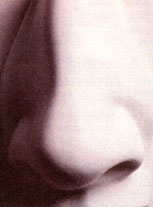

Herbal Remedies
Remedies to keep you breathing easy.
History has given the nose a bum rap. It seems to be the most unflattering part of the human anatomy. Romantic writers talk about straight noses, slender noses, snug noses, and jolly red noses. Shakespeare described one of his characters as having a nose as sharp as a pen, and in the Bible's book of Song of Solomon the writer tells his beloved that her nose is like the tower of Lebanon. (Don't try that one on yours.) While it can't be proven, the English writer Edward Lear may have started the idea of "nosy" people when one of his characters is reminded to "mind his nose."
Whatever art, literature, and history have done to the image of the nose, it remains a vital part of the anatomy. It is the organ of breathing and smelling and one to which we pay little attention until problems occur. We can't smell when we have a cold because the infection associated with the cold inflames the mucous membranes of the nasal passages and thereby blocks the movement of air to the center of smell. In the highest part of the nasal cavity are olfactory nerves which pick up smell and send its sensations to the olfactory lobe of the brain which records the smell. In this way we can distinguish a rose from a skunk, or a freshly brewed cup of coffee from freshly thrown fertilizer.
In addition to holding our sun glasses in the vicinity of our eyes, our nose enables us to inhale air from the outside and process it along to our lungs. One of the early signs of cold or flu is the stuffy nose or the runny one which is sometimes accompanied by cold sores on the external area of the nose. There are many excellent remedies you can make to deal with these discomforts. For colds and nasal discomfort in general, try these:
Combine half a clove of garlic with a teaspoon of cayenne (hot) pepper, the juice of one lemon, and a teaspoon of honey. Take this mixture three times daily. It's not guaranteed to make you smell like Chanel No. 5, but it will clear up the symptoms in a couple of days. You can also prepare a tea by placing one teaspoon each of cinnamon, sage, and bay leaves in hot water. Add a few squirts of concentrated lemon juice and drink. Another good remedy is made by boiling the leaves and flowers of borage (from your backyard garden or the local health food store) in a pan of water. Allow this to steep for 10 minutes, then strain and drink a cup of the extract three times each day.
An additional effective remedy for colds in general can be made by mixing one tablespoon each of yarrow, catnip, thyme, mint, sage, and verbena. After mixing well, place a teaspoon of the mix in a cup of boiling water for 10 minutes. Strain through cheesecloth and sweeten with a little honey.
Drink three or four cups each day. It produces a result not unlike the effect of being pulled over by the local traffic cop-it really makes you sweat. The profuse sweating caused by this remedy is what serves to drive out the cold symptoms.
What about the stuffy nose that forces you to breathe through your mouth and talk funny? Try these remedies: Inhale the vapors of one grated horseradish. Or crush a clove of garlic in a cup of warm water and place a few drops of the garlic solution into each nasal passage. And don't forget the old standby of hot chicken soup to which you may add garlic, parsley, and onion. Several good inhalants can be made right in your kitchen. One consists of a quarter cup of lemon thyme in a quart of water. Boil and inhale the steam. You can also make an effective vapor by adding one ounce of chopped comfrey leaves or root to one cup of water. Boil this mixture and inhale the steam. To get the best results, cover your head and the basin with a towel. And you can also get good results by adding a half cup of vinegar to boiling water and inhaling the fumes. Of course, all these methods sound pretty logical, so here is one that sounds crazy and illogical, but it works. Place several cubes of ice in a basin of water and place only your toes in the water until they begin to feel numb. You won't end up with frostbite, but it will serve to clear the nasal passages.
Millions of people suffer from irritated sinuses due to allergy attacks, air pollution, smoke, or viral infection. This is called sinusitis. Don't give in to it. Fight back with home remedies. Mix together two cups of cold water with one tablespoon of Epsom salts and two teaspoons of bicarbonate of soda. Dip a clean cloth in the liquid and place over the sinus area. Another method involves dissolving a 500 mg vitamin C tablet in a quarter cup of warm water. Apply directly to the nostrils with an eyedropper. Still another eyedropper remedy can be made by putting a teaspoon of dried rose petals in a cup of boiling water. Steep until cool, strain, and dip a cotton ball in the liquid. Apply this as a compress and place drops in the nostrils. One other method for sinusitis has been found to be helpful by many sufferers. Eat two garlic cloves three times a day for a week. Sinuses should start draining after a few days. Admittedly this is a tough treatment to stay with, in that you must be careful not to get close to anyone during the week, and romantic moments are definitely a no-no.
If our noses give us trouble with frequent running or stuffing up, those instances will in all likelihood be accompanied by the occasional bloody nose. The nose is the most vascular area of the body, which means that nasal passages are packed with veins and capillaries, many lying just below the thin lining of the nostrils, practically waiting for the right conditions to start bleeding. Very dry air, some dust or dirt, or a dozen other irritants may get the blood flow started. There are some simple remedies, however, for dealing with the problem. If your nosebleed is persistent, ice may stop the flow quickly. There are several methods you can try here. Studies have shown that sucking ice cubes can constrict the blood vessels, and this often helps. Some doctors recommend a cold compress of ice wrapped in a washcloth and placed on the forehead and bridge of the nose. Some even suggest a bag of frozen peas smashed up like a bean bag and wrapped in a towel. Vitamin C tablets and zinc tablets have both been shown to be important in the maintenance of body tissues, including the blood vessels. Taking a tablet of each every day as well as eating foods rich in vitamin C, including fruits and vegetables, is recommended. You will want to avoid taking aspirin unless your doctor has prescribed it for another condition, since aspirin is an anticoagulant or "blood thinner" which can aggravate a sensitive nose and cause it to bleed.
Whatever the poets and romanticists opine about our noses, we all have to live with them right in the middle of our faces. Hopefully some knowledge of these "nosy" remedies will make our life with them a more compatible arrangement.
|
 |
|
|